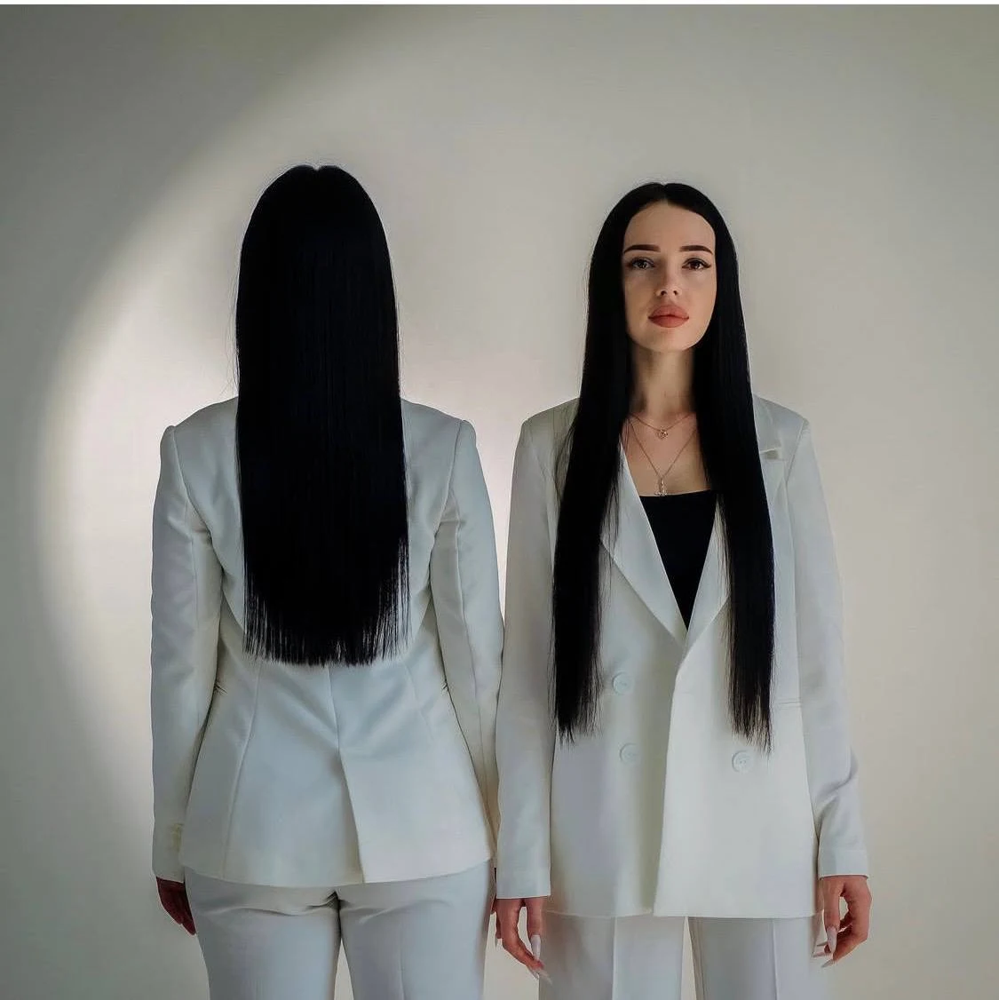
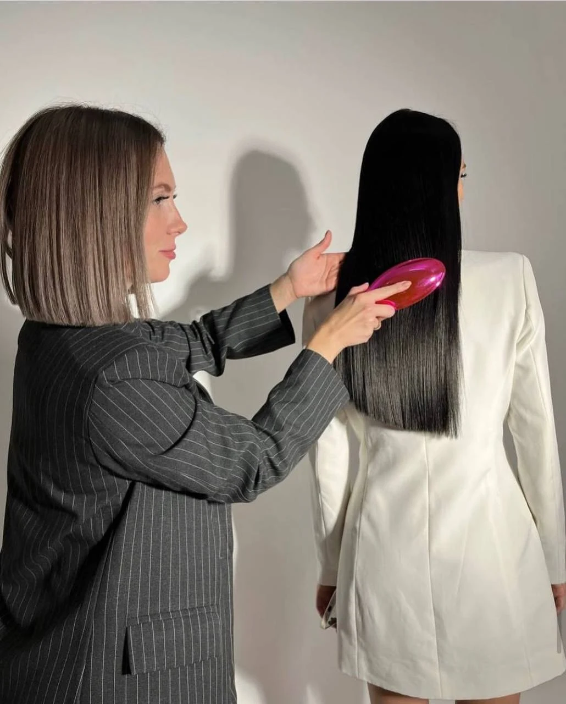

СТУДИЯ УХОДА ЗА ВОЛОСАМИ · АНАПА
Искусство
быть гладкими.
Волосы, к которым хочется прикоснуться.
Кератин, восстановление и уход —
с вниманием к вашей индивидуальности.
НАША СПЕЦИАЛИЗАЦИЯ.Откройте результат

Выразительный результат.
01 / РЕЗУЛЬТАТЫ
Реальные работы нашей студииПусть волосы
говорят сами.
От аккуратного каре до выразительной длины.
Рассмотрите детали, текстуру и блеск.
Нажмите на фото, чтобы рассмотреть ближе
02 / МЕНЮ УХОДА
Внимание к каждой прядиВаши волосы.
Ваш уход.
Выберите направление —
детали обсудим на консультации.
01Тотальная реконструкция
от 5 000 ₽
Особое внимание качеству волос.
Стоимость зависит от длины и густоты.
| 10–30 см | 5 000 ₽ |
| 30–40 см | 6 000 ₽ |
| 40–55 см | 7 500 ₽ |
| 60–70 см | 9 000 ₽ |
| От 70 см | 9 000–13 000 ₽ |
Возможна доплата за густоту. Для длины между указанными диапазонами стоимость уточнит мастер.
02Кератин / ботокс
По консультации
Расскажите, какого результата хотите: больше гладкости, блеска или более лёгкой укладки. Обсудим подходящий вариант и стоимость.
Подобрать процедуру03Пилинг кожи головы
от 1 500 ₽
Дополните свой визит уходом за кожей головы.
Спа-уход для волос включён в стоимость.
Вместе с процедурами1 500 ₽
Отдельная процедура3 000 ₽
Возможна доплата за густоту.04Полировка волос
от 1 000 ₽
Уход с вниманием к деталям и длине.
Спа-уход для волос включён в стоимость.
Вместе с процедурами1 000 ₽
Отдельная процедура2 500 ₽
Возможна доплата за густоту.05Сложное окрашивание
По консультации
Новый оттенок начинается с разговора. Обсудим исходный цвет, историю окрашиваний и желаемый результат.
Обсудить окрашивание
THE ART OF HAIR CARE03 / НА КЕРАТИНЕ 323
За красивыми
волосами —
внимание.
К тому, какие они сейчас.
К тому, какими вы хотите их видеть.
К деталям, из которых складывается образ.
Наша студия в Анапе — пространство для ухода за волосами, восстановления и перемен. Здесь можно обсудить свой запрос и выбрать направление ухода.
Начнём со знакомства НА КЕРАТИНЕ 32304 / ВАШ ПЕРВЫЙ ШАГ
Красота начинается
с вас.
Три небольшие детали помогут
начать разговор с мастером.
ДЕЛИМСЯ МАСТЕРСТВОМ
Красота — ваше
будущее дело?
Обучение в НА КЕРАТИНЕ 323.
Узнайте о программе и ближайшем наборе.
05 / ЕСТЬ ВОПРОСЫ?
Всё начинается
с диалога.
Как узнать точную стоимость?
Посмотрите прайс выше и напишите мастеру о длине, густоте и желаемой процедуре. В прайсе предусмотрена возможная доплата за густоту, поэтому итоговую стоимость нужно уточнить перед записью.
Что выбрать: кератин или ботокс?
Начните с желаемого результата и расскажите мастеру об окрашивании и предыдущих процедурах. Подходящий вариант лучше обсуждать индивидуально. Форма выше поможет подготовить сообщение.
Можно ли прийти с окрашенными волосами?
Сообщите мастеру, когда и чем вы окрашивали или осветляли волосы. Возможность конкретной процедуры и её сочетание с окрашиванием обсудите до записи.
Сколько времени выделить на визит?
Время зависит от выбранной услуги, длины и густоты волос. Уточните длительность у мастера при записи, чтобы спокойно спланировать визит.
Как ухаживать за волосами после процедуры?
Попросите мастера подобрать рекомендации под выполненную процедуру. Если планируете море или бассейн, обязательно обсудите это перед визитом.
06 / ДО ВСТРЕЧИ В СТУДИИ
АНАПА, УЛ. ЛЕНИНА, 239